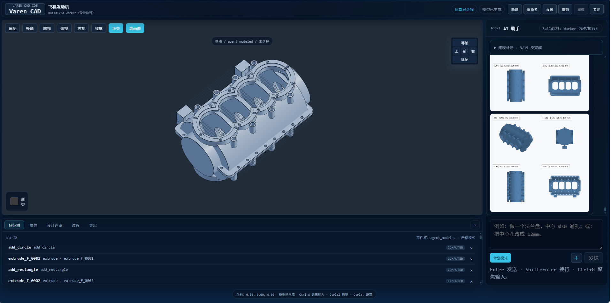
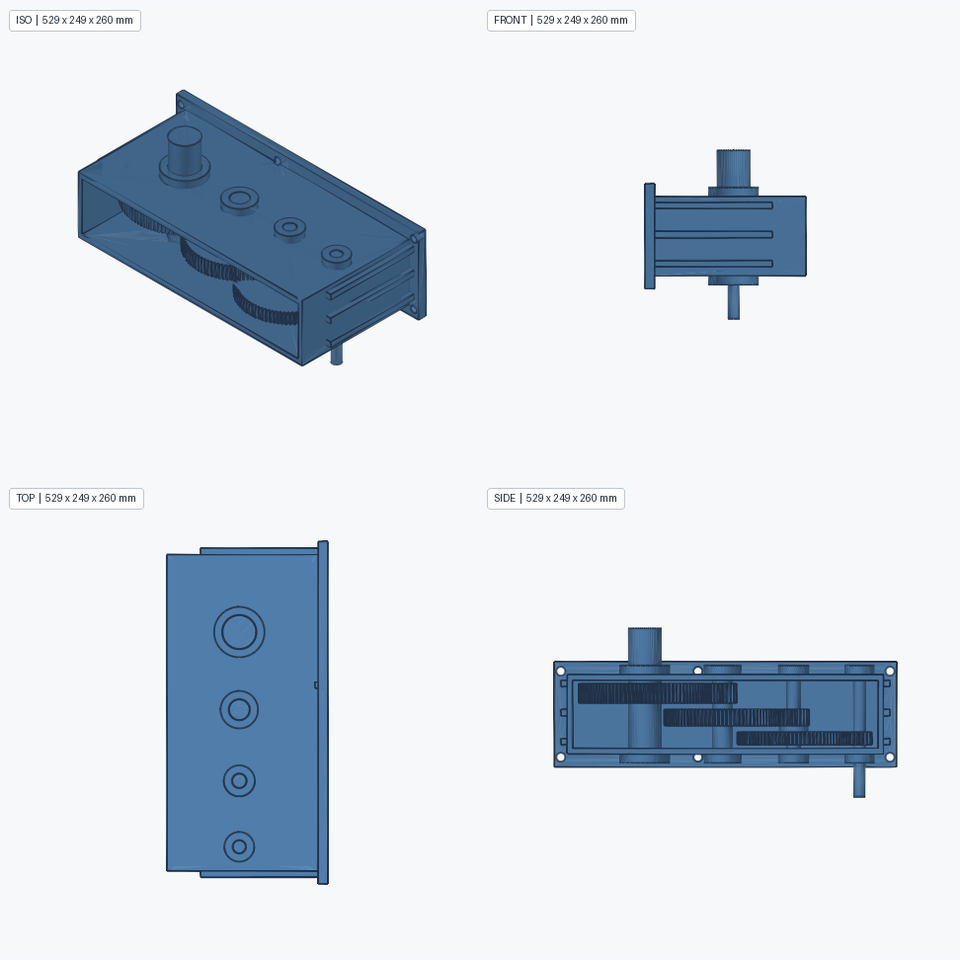
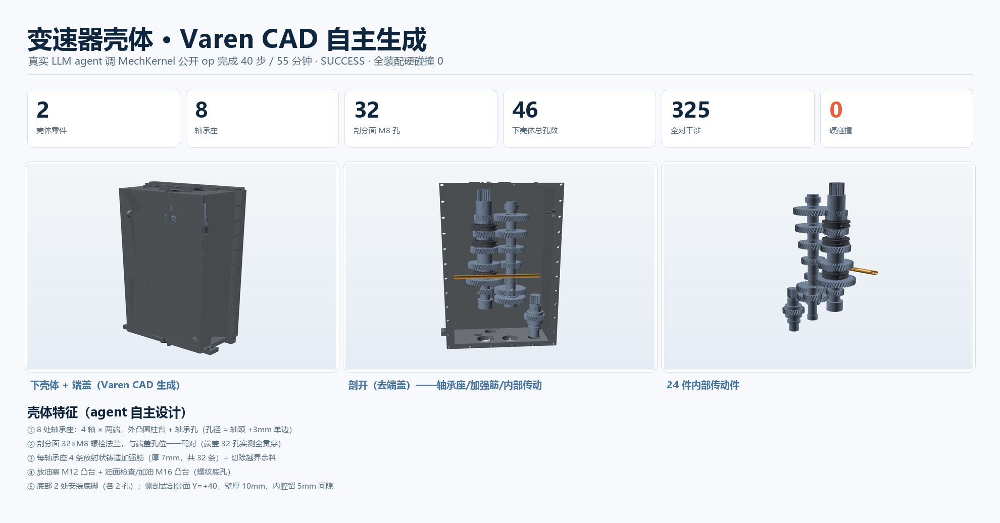
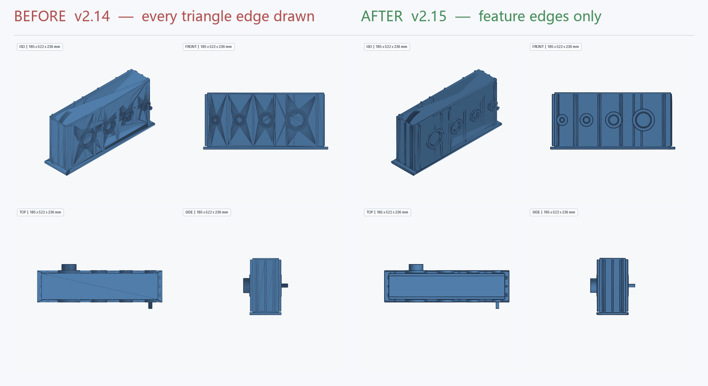

01 / RUNTIMEENHANCED
增强 Agent 引擎
内嵌运行时支持网页/项目文件读取、技能、上下文压缩与子代理；经典引擎仍可选，启动失败自动回退。
Varen CAD 是把机械设计意图变成真实 B-Rep 的 AI Agent。它先联网调研、计算和提问，再把 BOM 计划交给你批准；逐件建模、检查装配，最后才允许导出 STEP。过程可见，失败不伪装成交付。
增强引擎把联网调研、只读子代理、多模态读图和工具过程带进同一个 CAD 会话。所有外部内容都标为不可信，所有关键动作仍经过门禁。
内嵌运行时支持网页/项目文件读取、技能、上下文压缩与子代理；经典引擎仍可选，启动失败自动回退。
web_search / web_fetch 在会话中显示查询、结果数和可点击来源；摘要标记为 untrusted，引用前可抓原文核对。
支持 Tavily 兼容端点、DeepSeek Search API 和官方云端回退；密钥只写入本机 .env，测试不覆盖已保存配置。
子代理可以检索、读取项目和运行只读查询/审查，但不能修改几何、计划或归档零件，结果回传父会话。
支持视觉的规划模型直接接收草图/图纸图片，不再强制先做一段视觉预描述；纯文本模型仍可走预描述。
搜索、抓取、建模和审批都以工具卡呈现，带参数、结果数、错误和来源。Agent 做了什么，用户看得见。
不是一次性“生成一个模型”，而是一条可审阅的工程链路：调研、计划、建模、验证、交付。
整理设计意图，必要时联网检索，展示来源；需求不清先提问。
web_search · ask_user列出 BOM、关键参数、位姿和步骤；批准前不改几何。
propose_plan每件独立内核会话，参数化 B-Rep，保留特征历史。
kernel ops · finish_part单实体、孔位、体积、特征契约和干涉逐项检查。
query · measure · audit装配 STEP、预览、报告一起生成；有硬碰撞就阻断。
export_assembly对话不是外挂聊天窗口：计划、工具调用、特征树、选面/选边和交付物都围绕同一个项目状态工作。

以下为 Agent 工作流的真实任务结果。案例展示能力，不代表每个任务都能一次成功。


只显示特征边，消除三角化对角线噪声。渲染用来查看，不替代尺寸与拓扑实测。

Varen CAD 把“看起来像”与“实测通过”分开。关键动作不是靠提示词约束，而是由程序门禁执行。
计划批准前，几何修改工具不可用；只读查询、测量、提问仍可进行。
单实体、strict 几何验证、关键孔/圆柱特征契约逐件检查。
逐对检查硬碰撞；设计内重叠必须在 expected_overlaps 中显式豁免。
未解决的工程事实冲突会阻断几何修改，只读、提问和规划仍可用。
搜索和抓取有配额与 SSRF 校验；结果标记 untrusted，不伪造来源或正文。
结构化需求单、追问与缺口清单；用户确认后冻结。
问题 → 来源 → 证据审核 → 回填；引用必须能回到原文。
阶段在界面中明确标注未开放，不把半成品伪装成完整流程。
同上，保留 DFM 规则骨架与知识工作台，等待真实流程上线。
Varen CAD 不把用户锁在一个模型供应商里。模型端点和搜索端点都可以在本机配置，密钥只保存在本地。
规划模型支持 DeepSeek 官方端点或任意 OpenAI 兼容端点；视觉与规划可分开配置。
搜索端点可配 Tavily 兼容协议或 DeepSeek Search；未配置时回退官方云端，失败时明确报错。
项目、会话和产物保存在本机；远程模型/搜索收到的上下文受对应服务商政策约束。
当前为 Windows 封闭 Beta。请在使用前了解这些边界。
production_ready 始终为 false；制造前由工程师复核尺寸、材料和设计。
不提供完整 2D 工程图流程或通用装配配合、运动求解器。
Beta 安装包面向 Windows x64；远程模型端点需要用户自行配置。
搜索 API 或云端登录需要在设置中配置；未配置时工具明确报错，不编造来源。
封闭 Beta · 概念设计与快速原型 · 输出需人工工程复核